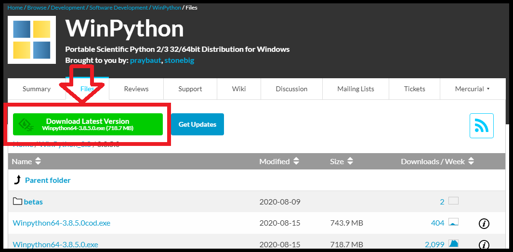
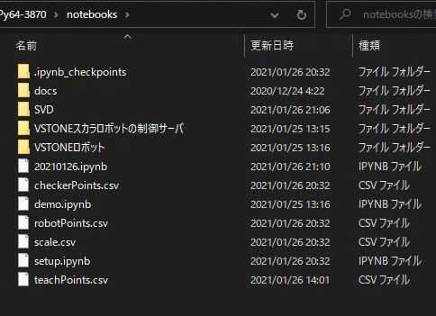
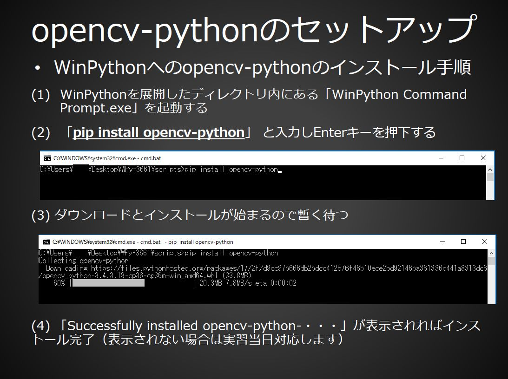
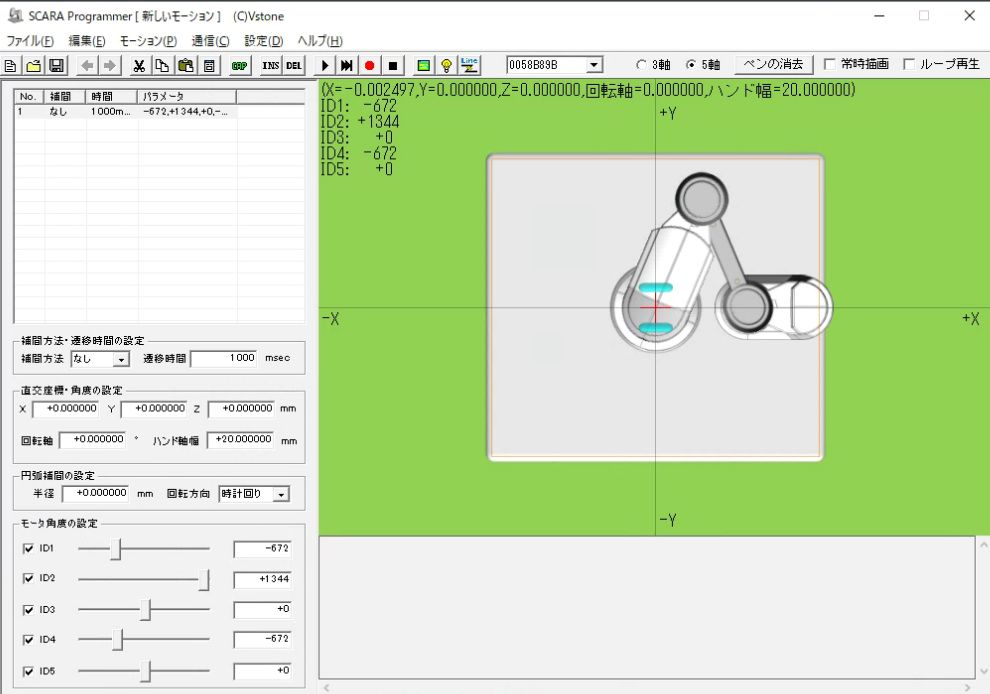
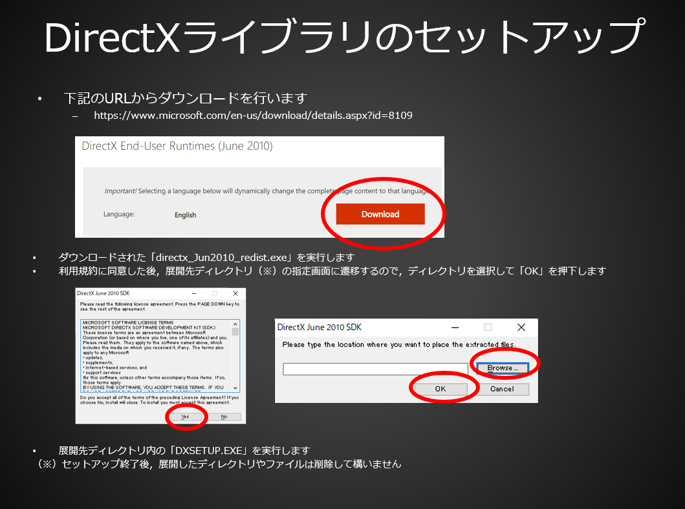

スマートものづくり人材育成講座 実習補助ページ
ロボット実習で利用する教材をダウンロードの上，インストールとセットアップを行ってください．実習資料のダウンロードをお願いします 加えて後述の手順に従い，下記のダウンロードとセットアップをお願いいたします．
- WinPython 3.8ダウンロードとインストール
- 実習用ロボット・画像処理ソフトウェアアーカイブのダウンロードと展開
- WinPythonへのOpenCV-pythonのインストール
- SCARA Programmerの起動
- （オプション）USBドライバのインストール
WinPythonのインストール
- WinPython 3.8のダウンロードページに移動してダウンロードを行います（最新版でOK）
- ダウンロード後にインストーラを起動し，任意のディレクトリに解凍／インストールしてください（３０分から１時間程度かかります）
- 解凍／インストールしたディレクトリに当日アクセスしますので，忘れないよう願います
- 遷移先のページで「Download Latest Version」をクリックしてダウンロードしてください 
実習用ロボット・画像処理ソフトウェアアーカイブのダウンロードと展開
- 実習用ロボット・画像処理ソフトウェアアーカイブ
上記アーカイブについてダウンロードとWinPythonのNotebookディレクトリへの展開をお願いします - ダウンロード後，「WinPython 3.8ダウンロードとインストール」の手順で WinPython をインストールしたディレクトリに移動します
- ダウンロードしたZipファイルを「notebooks」ディレクトリに展開します 
WinPythonへのOpenCV-pythonのインストール
- 下記の手順に従い，WinPythonへのOpenCV-pythonのインストールを行ってください
（インターネットへのアクセスが必須の作業になりますので，事前に必ず実行願います）

SCARA Programmerの起動
- 「実習用ロボット・画像処理ソフトウェアアーカイブ」としてダウンロードして展開したディレクトリを開きます
- 「WPy64-XXXX/notebooks/VSTONEロボット」内にSCARA Programmerの実行ファイルアーカイブである「SCARA_Programmer_Inst_003.zip」が入っているので任意の場所に展開します
- 展開したディレクトリ内に「SCARAProgrammer.exe」が入っているので起動します．起動後下記の画面が表示されていればセットアップは完了です． 
- SCARA Programmerを起動した際，「d3dx9_43.dll/d3dx9_32.dllがない」と表示され，アプリケーションが起動しない場合は，こちらからMicrosoft DirectXの該当プログラムのダウンロードとインストールを実施してください． 
（オプション）USBドライバのインストール
- （SCARA Programmer起動後にロボットと通信できない場合．古いWindows10などのための情報）
- 「WPy64-XXXX/notebooks/VSTONEロボット」内にUSBドライバのインストーラである「CP2110_4_Windows.exe」が入っているので実行してインストールを行ってください
- それでもロボットと通信できない場合，ロボットとPCを接続する際に必要な「CP2110/4 HID USB-to-UART インターフェースライブラリ」をダウンロードの上，インストールを済ませてください．
CP2110/4 HID USB-to-UART インターフェースライブラリ(Sillicon Lab社のページへ)